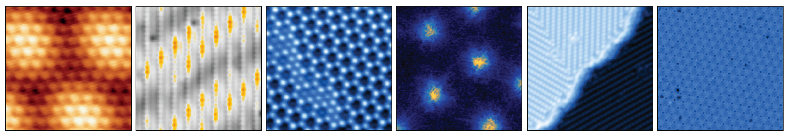

About
I'm an experimental physicist specialized in Scanning Tunneling Microscopy/Spectroscopy. My work broadly sits at the intersection of condensed matter physics and atomic-scale imaging, exploring how electronic and magnetic order emerge in quantum materials.
Research

My career started at Istanbul Technical University, where I worked on the chemical vapor deposition synthesis of graphene and its transfer onto arbitrary substrates, alongside room-temperature scanning probe microscopy of these surfaces1. During my PhD at Radboud University Nijmegen, I primarily studied frustrated magnetism using spin-polarized STM, uncovering a self-induced spin-glass state in elemental neodymium2,3. Further, I worked on two-dimensional TMDCs4,5, as well as superconductor-semiconductor hybrid interfaces6. Since joining Princeton University, my work has centered on imaging strongly correlated phases in quantum materials, including fractional quantum Hall states7 and electron solid phases8.